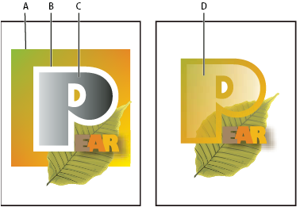
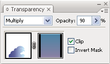

Use opacity masks to create transparency
You use an opacity mask and a masking object to alter the transparency of the underlying artwork. The opacity mask (also referred to as masked artwork) provides the shape through which other objects show. The masking object defines which areas are transparent and the degree of transparency. You can use any colored object or raster image as the masking object. Illustrator uses the grayscale equivalents of the colors in the masking object for the opacity levels in the mask. Where the opacity mask is white, the artwork is fully visible. Where the opacity mask is black, the artwork is hidden. Shades of gray in the mask result in varying degrees of transparency in the artwork.

- A.
- Underlying objects
- B.
- Opacity mask artwork
- C.
- Masking object filled with black-to-white gradient
- D.
- C moved over the area of B and masking B
When you create the opacity mask, a thumbnail of the masking object appears in the Transparency panel to the right of the thumbnail of the masked artwork. (If these thumbnails aren’t visible, choose Show Thumbnails from the panel menu.) By default, the masked artwork and the masking object are linked (as shown by a link between the thumbnails in the panel). When you move the masked artwork, the masking object moves along with it. However, when you move a masking object, the masked artwork doesn’t move. You can unlink the mask in the Transparency panel to lock the mask in place and move the masked artwork independently of it.

You can move masks between Photoshop and Illustrator. Opacity masks in Illustrator convert to layer masks in Photoshop, and vice versa.
For a video on working with opacity masks, see www.adobe.com/go/vid0056.
 Create an opacity mask
Create an opacity mask
- Select a single object or group, or target a layer in the Layers panel.
- Double-click directly to the right of the thumbnail in the Transparency panel.
- If the thumbnail isn’t visible, choose Show Thumbnails from the panel menu. An empty mask is created and Illustrator automatically enters mask-editing mode.
- Use the drawing tools to draw a mask shape.
- Click the masked artwork’s thumbnail (left thumbnail) in the Transparency panel to exit mask-editing mode.
Convert an existing object into an opacity mask
 Select
at least two objects or groups, and choose Make Opacity Mask from
the Transparency panel menu. The topmost selected object or group
is used as the mask.
Select
at least two objects or groups, and choose Make Opacity Mask from
the Transparency panel menu. The topmost selected object or group
is used as the mask.Edit a masking object
You can edit a masking object to change the shape or transparency of the mask.
- Click the masking object’s thumbnail (right thumbnail) in the Transparency panel.
- Alt‑click (Windows) or Option-click (Mac OS) the mask thumbnail to hide all other artwork in the document window. (If the thumbnails aren’t visible, choose Show Thumbnails from the panel menu.)
- Use any of the Illustrator editing tools and techniques to edit the mask.
- Click the masked artwork’s thumbnail (left thumbnail) in the Transparency panel to exit mask-editing mode.
Unlink or relink an opacity mask
- To unlink a mask, target
the masked artwork in the Layers panel, and then click the link
symbol
 between
the thumbnails in the Transparency panel. Alternatively, select
Unlink Opacity Mask from the Transparency panel menu.
between
the thumbnails in the Transparency panel. Alternatively, select
Unlink Opacity Mask from the Transparency panel menu.
The masking object is locked in position and size, and the masked objects can be moved and resized independently of the mask.
Deactivate or reactivate an opacity mask
You can deactivate a mask to remove the transparency it creates.
- To deactivate a mask, target the masked artwork in the Layers panel, and then Shift-click the masking object’s thumbnail (right thumbnail) in the Transparency panel. Alternatively, select Disable Opacity Mask from the Transparency panel menu. When the opacity mask is deactivated, a red x appears over the mask thumbnail in the Transparency panel.
- To reactivate a mask, target the masked artwork in the Layers panel, and then Shift-click the masking object’s thumbnail in the Transparency panel. Alternatively, select Enable Opacity Mask from the Transparency panel menu.
Remove an opacity mask
Target the masked artwork in the
Layers panel, and then select Release Opacity Mask from the Transparency
panel menu.
The masking object reappears on top of the objects that were masked.